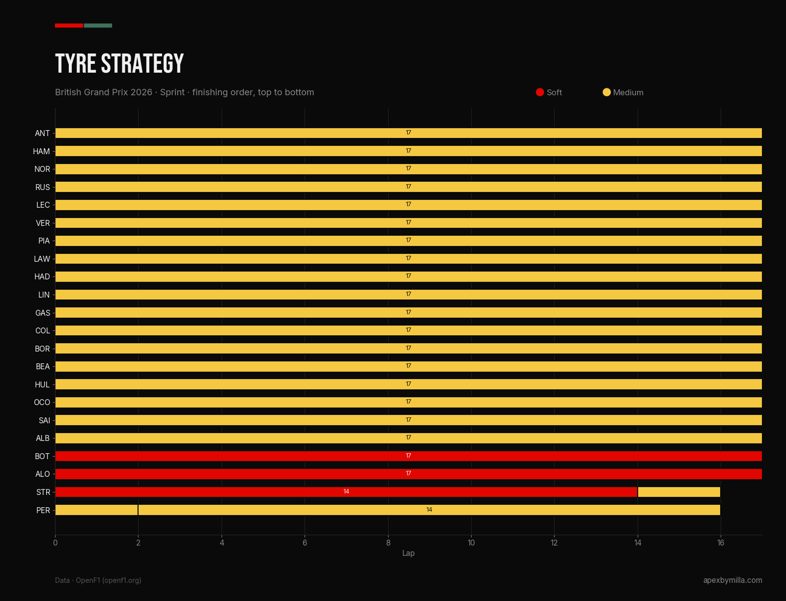
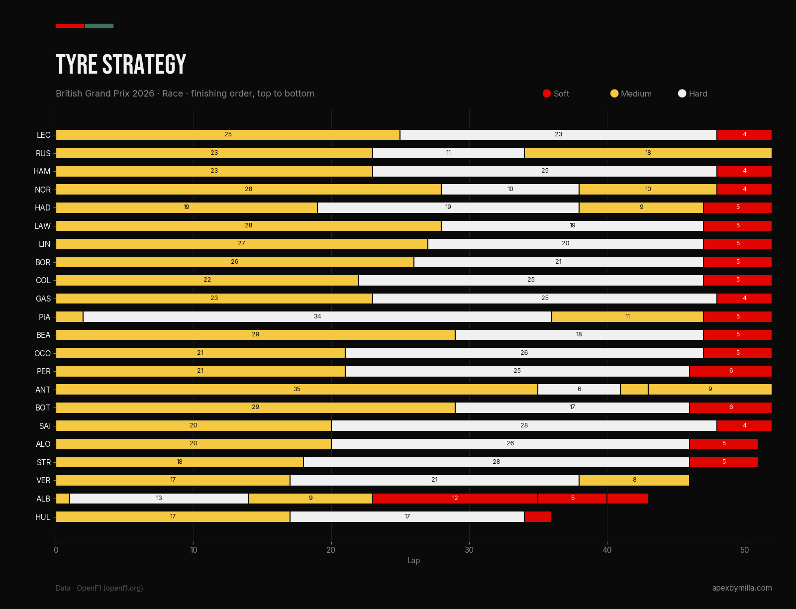
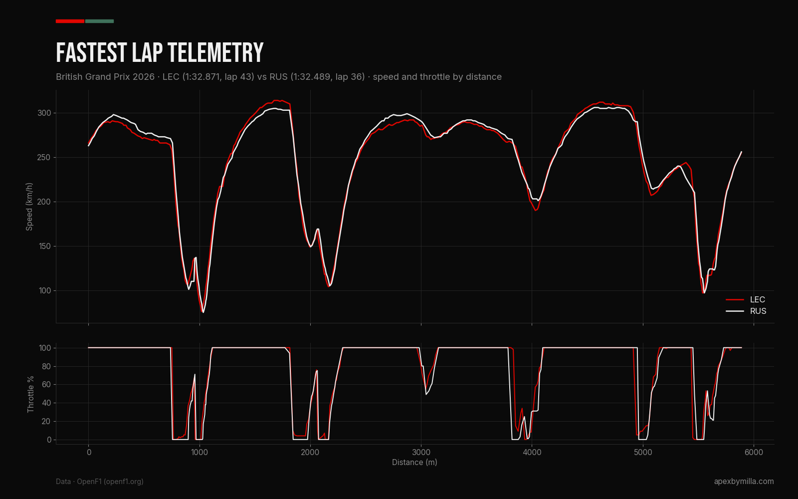
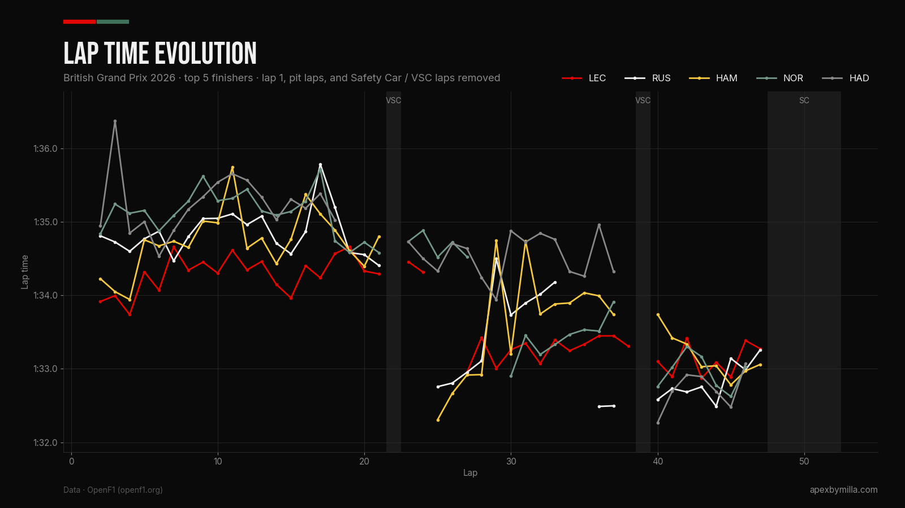
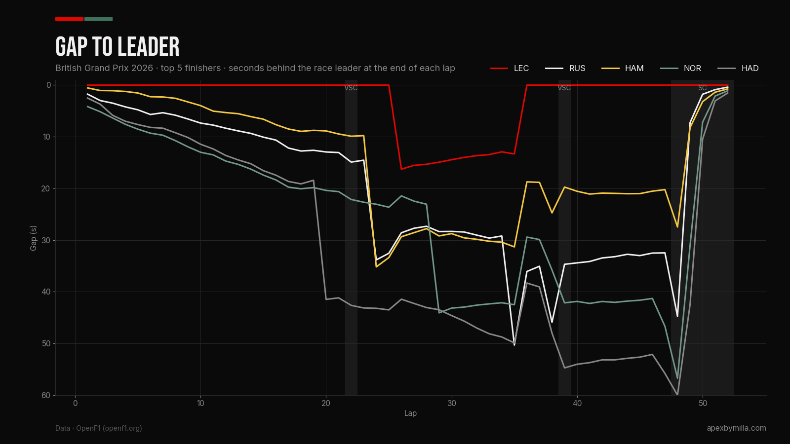

Charles Leclerc won the 2026 British Grand Prix from P2 on the grid, his first win at Silverstone and Ferrari's 250th in Formula 1. Pole-sitter Kimi Antonelli was closing in on fresher tyres when his left-hand wheel shield failed, and two extra stops plus a track limits penalty dropped him to P15. A Safety Car with four laps left decided the podium, because Ferrari pitted both cars for Softs expecting a restart that never came, while George Russell stayed out and took second.
Race Overview
At the fast, sweeping Silverstone Circuit, Charles Leclerc took his first British Grand Prix victory from second on the grid, finishing just 0.427s ahead of George Russell after a late Safety CarSafety CarA road car that leads the field at a controlled speed while a hazard is cleared. Overtaking is banned.→ Apex Index closed up the field behind him. It was his ninth career win, his first since the 2024 United States Grand Prix, and Ferrari's 250th win in Formula 1, with Lewis Hamilton completing the podium in third for a Ferrari 1-3.
Leclerc made the best start off the front row and led into Turn 1, while Hamilton followed him past pole-sitter Kimi Antonelli to put both Ferraris ahead on the opening lap. Hamilton's start was not clean though, and he was given a five-second time penalty for a false start, which he served at his first stop on Lap 23. Further back, Oscar Piastri made contact with Liam Lawson and broke his front wing, and Alexander Albon tapped Oliver Bearman into a spin at Turn 6, which earned Albon a 10-second penalty. Antonelli took second back from Hamilton on Lap 11 at Turn 9 and started to chase Leclerc, staying within around three to five seconds of him through the first stint.
The first neutralisation came on Lap 22, a short Virtual Safety CarVirtual Safety Car (VSC)A neutralisation where every driver holds a set delta time instead of following a physical Safety Car.→ Apex Index while a marshal recovered an umbrella from the side of the track at Turn 10, but only Esteban Ocon and Sergio Perez used it to pit. Leclerc stopped for Hards on Lap 25, and Mercedes kept Antonelli out for another ten laps to build a tyre life advantage for the second half of the race, which put him in the lead until his own stop on Lap 35. He rejoined around seven seconds behind Leclerc and had cut that to under four seconds by Lap 40. A second VSC on Lap 39, after Nico Hulkenberg stopped with a suspected gearbox issue, gave Max Verstappen, Lando Norris, and Isack Hadjar a cheaper stop.
Antonelli's challenge ended on Lap 41 when he reported that something had broken, and his race engineer Peter Bonnington, also known as "Bono", told him, "We think it is the wheel shield left-hand side." The failure cost him his front downforce, and he needed two extra stops, on Laps 41 and 43, to change the front wing and then remove the damaged part. He also picked up a five-second penalty for track limits while he was struggling with the car, which dropped him from P10 on the road to P15 at the flag.
The podium was decided on Lap 48, when Verstappen, who was running third, spun into the gravel at Turn 15 after his rear wing failed to close, bringing out the Safety Car. Ferrari pitted both cars for Softs, expecting a restart, but Mercedes kept Russell out on his Mediums, which moved him ahead of Hamilton into second. The Safety Car never came in, and the race finished behind it, with Hamilton 0.772s back in third, and Norris and Hadjar completing a top five covered by 1.598s.
Practice
FP1
With Silverstone hosting a Sprint, FP1 was the only practice session of the weekend, which left teams one hour to split their running between long runs and qualifying preparation before Sprint Qualifying that afternoon. Pirelli had predicted that the Hard C1 would be used heavily in FP1 for this reason, and the timing data confirms it, with the whole top eight starting the session on Hards before switching to Softs for their final runs.
Hamilton topped the session with a 1:29.260 on the Soft C3, 0.213s ahead of Antonelli and 0.599s ahead of Leclerc, while Russell was fourth, 0.678s back. On the opening Hard runs, Antonelli's typical lap was a 1:31.4, against a 1:31.5 for Leclerc and a 1:31.7 for Hamilton, although fuel loads are not published, so those numbers are only a rough guide to race pace. Red Bull also showed strong pace on the Hard tyre, while Williams ran its new front wing back to back against the older version.
Conditions were much cooler than the previous weekend in Austria, with air temperatures between 21°C and 23°C and track temperatures between 38°C and 43°C. Piastri spun at one point but carried on, and the stewards noted a Turn 3 incident between Hulkenberg and Lawson and a yellow flag infringement by Verstappen, but took no further action on either.
Starting Grid & Qualifying
Antonelli took his fifth pole of the season with a 1:28.111, 0.175s ahead of Leclerc and 0.347s ahead of Hamilton, with Russell fourth to split the front two rows between Mercedes and Ferrari. Antonelli admitted the final run made him nervous, saying, "I was a bit stressed because I never really like going first for the last run," but his last lap was enough. Hadjar qualified fifth, ahead of Norris, Verstappen, and Piastri.
Conditions were difficult throughout, with gusty wind across the circuit. Antonelli said, "It was very tricky with the wind because it was very gusty and unpredictable," and he had a lap deleted for track limits in Q2 before recovering with a 1:28.493. Russell had a bigger scare in Q1 when he locked a front brake at Turn 7, ran through the gravel, and damaged his front wing against the barrier, but Mercedes changed the wing in time for him to go back out and reach Q3.
Leclerc's P2 came after changes to his car between the Sprint and Qualifying. He explained after the race, "We made some changes on my car between Saturday morning to the afternoon, and I got back the feeling I had been missing." Verstappen's session went the other way, and he radioed "This engine is not responding as normal" in Q2 before qualifying seventh, later saying the team was "pretty sure there's a problem there."
Two grid penalties changed the order further back. Pierre Gasly qualified twelfth but dropped three places to fifteenth for impeding Lance Stroll in Q1, and Stroll took a 10-place penalty for using additional power unit elements, which only moved him from twenty-first to the back of the grid. Gabriel Bortoleto missed Q3 by 0.032s in eleventh, and Racing Bulls were fined €5,000 for an unsafe release of Arvid Lindblad in the pit lane.
Sprint Race
Sprint Qualifying
Hamilton took Sprint pole by just 0.011s from Antonelli, a 1:28.376 against a 1:28.387, with Verstappen third, Leclerc fourth, and Russell fifth. SQ1 was run on the Medium C2 and SQ3 on the Soft C3, and the wind made every lap hard to judge, with Red Bull's Technical Director Pierre Waché noting that "The Silverstone layout is completely different to last week in Austria." Norris was affected by damage to a front brake duct from SQ1, which McLaren only repaired just before SQ3, and Bearman began a flying lap in SQ1 with his state of chargeState of Charge (SoC)How much energy is stored in the battery, which decides how much electrical power a driver can deploy.→ Apex Index around 10% down, which shows how much a single lap depends on starting with the battery in the right state under the 2026 power unit rules.
Albon qualified sixteenth, but Williams then modified his car under parc ferméParc ferméThe rules that stop teams changing setup or major parts between qualifying and the race without permission.→ Apex Index conditions, so he started the Sprint from the pit lane.
Sprint Race Breakdown
Hamilton led away from pole and held Antonelli off for the first seven laps, but Antonelli passed him on Lap 8 and pulled clear to win by 2.745s, his first Sprint victory, despite admitting he "was struggling for momentum at the start of the Sprint." Norris took third after an aggressive opening lap, finishing 9.783s behind, with Russell fourth and Leclerc fifth. Verstappen lost several places with a poor start and finished sixth, ahead of Piastri and Lawson.
Energy deployment shaped most of the racing behind the leaders, with Toto Wolff describing "lots of yo-yoing as drivers used different deployment strategies to try and gain position." Almost the whole field ran the Medium C2 for all 17 laps, with only Valtteri Bottas, Fernando Alonso, and Stroll starting on the Soft C3, and Stroll pitted for Mediums on Lap 14.
After the flag, Perez received a 10-second penalty for causing a collision, and Hulkenberg received a five-second penalty for leaving the track and gaining an advantage, which dropped him from 13th to 15th. Lawson cut across the apex at Turn 15 while defending from Hadjar, but the stewards only gave him a warning, so he kept the final point in eighth.

Sprint Result — Top 8
Technical Breakdown
Silverstone is one of the most demanding circuits of the year on the tyres and the chassis, with Pirelli noting that "The accelerations reached in some sections exceed 5g, similar to what is seen at Suzuka and Spa." For the 2026 cars, the mix of long high-speed corners and long straights means the active aero switches between Corner ModeCorner ModeThe 2026 active aero setting with the wings closed for maximum downforce through the corners.→ Apex Index and Straight ModeStraight ModeThe 2026 active aero setting with the wings open and flat for minimum drag on the straights.→ Apex Index many times a lap, and the gusty wind made the balance harder to predict across the whole weekend.
The race itself was shaped more by failures than by pace. Antonelli's wheel shield, Verstappen's rear wing, and Russell's slow puncture all changed the order of the top five, and Hulkenberg's suspected gearbox failure caused one of the two VSCs.
Compound Choice
Pirelli brought the three hardest compounds in its range, the C1, C2, and C3, because of the high severity of the circuit. The front axle takes most of the load, and Pirelli singled out the left-front as "particularly prone to wear." Silverstone has 10 right-hand corners against 8 left-handers, so the left side of the car spends more time on the outside of the corner, where the load is highest.
The surface itself is gentle, which Pirelli described as "not abrasive" with "relatively low roughness", so the degradation at Silverstone comes from the energy going into the tyre through the fast corners rather than from the asphalt wearing the rubber away. The choice was meant to encourage a one-stop using the C2 and C3, with the C1 expected to be used mostly in FP1. That is not how the race went. Every driver started on the Medium C2 and moved to the Hard C1, and apart from Albon, who was effectively testing after his opening-lap damage, and Hulkenberg in the two laps before he retired, the Soft C3 only appeared in the final stints after the neutralisations.
Tyre Strategy
Pirelli confirmed that "The initial strategy planned by most teams was a one-stop, but two neutralisations in the closing stages forced all drivers to make at least two pit stops." The leaders split their first stops across a wide window, with Hamilton and Russell stopping on Lap 23, Leclerc on Lap 25, and Norris on Lap 28, while Mercedes kept Antonelli out until Lap 35. His 35 laps on the Medium C2 were the longest Medium stint of the race, and they gave him a 10-lap tyre offset over Leclerc for the second half.
Russell's race went in a different direction. Mercedes spotted a slow puncture on Lap 33, and he pitted on Lap 34, switching from the Hard back to the Medium, after losing "around five or six PSI over a lap and a half." That unplanned stop is what left him on a used set of Mediums, 14 laps into the stint and around 20 laps old in total, when the Safety Car came out, and because he was already on the Medium rather than an old Hard, Mercedes chose track position and kept him out. Ferrari did the opposite and brought both cars in for Softs with only three laps on them, as did most of the field, but with the race never restarting, those tyres were never used at full speed.
Further back, Piastri's Lap 2 stop for a new front wing left him running 34 laps on the Hard C1, the longest Hard stint of the race, and he reported, "Front left doesn't look great. It's grainingGrainingSurface tearing when a tyre slides or is too cold, so it runs on top of its own rolled-up rubber.→ Apex Index," which matches Pirelli's warning about the left-front. Albon's 12 laps on the Soft C3 were the longest Soft stint, run while Williams used his race to test new parts.

Aerodynamics & Setup
Silverstone's long, high-speed corners need downforce, but the straights between them reward a low-drag car, and Fred Vasseur said the circuit was "much more engine related" than Spain. Mercedes and Ferrari did not agree on where the advantage was. On Saturday, Vasseur said Mercedes "still have an advantage in terms of top speed," while Russell said, "we've been struggling with our straight-line speed."
The telemetry from the two drivers' fastest laps in the race supports Russell's view more than Vasseur's, with Leclerc reaching around 314 km/h against around 306 km/h for Russell. They were set on different laps and tyres, and either car could have had a tow, so this does not settle it, but it does show that Ferrari were not obviously losing time on the straights in the race.

Red Bull's problem was more serious. Verstappen's crash at Turn 15 came from the rear wing failing to close at the end of a Straight Mode zone, which left the car without its rear downforce on the way into the corner. Verstappen said, "When the rear wing doesn't close fully, you lose a lot of downforce and you spin off the track." It was the second rear wing failure in two races after his Q3 crash in Austria, and Laurent Mekies said Silverstone was "a different type of failure", with the team reviewing "the full area". Red Bull have run the "upside-down" rear wing concept, which Ferrari first showed in pre-season testing, for the last five races.
Antonelli's failure showed how much load the front of the car carries through the fast corners. He said he "immediately lost front downforce", and Andrew Shovlin said the wheel shield failure "felt to Kimi like the suspension had failed." McLaren were further from the front on setup, with Piastri saying "The car was nervous, especially in the high-speed corners," and Andrea Stella estimating the gap to Ferrari and Mercedes at "probably around half a second."
Pace & Performance
The finishing order did not reflect race pace. The fastest lap of the race went to Antonelli, who set a 1:31.777 on Lap 37, his second lap on the Hard C1, and it was 0.324s quicker than anyone else managed. Leclerc won with only the eighth-fastest lap of the race, a 1:32.871, which shows that his win came from track position and from being in the right place when the failures and the Safety Car happened, more than from raw speed.
| Pos. | Driver | Fastest lap | On lap | Pit stops (lap) | Stop times | Gap at flag |
|---|---|---|---|---|---|---|
| P1 | Leclerc (Ferrari) | 1:32.871 | 43 | 25, 48 | 28.444s, 28.887s | WINNER |
| P2 | Russell (Mercedes) | 1:32.489 | 36 | 23, 34 | 28.663s, 28.337s | +0.427s |
| P3 | Hamilton (Ferrari) | 1:32.309 | 25 | 23, 48 | 34.864s*, 28.732s | +0.772s |
| P4 | Norris (McLaren) | 1:32.625 | 45 | 28, 38, 48 | 28.833s, 29.818s, 28.475s | +1.149s |
| P15 | Antonelli (Mercedes) | 1:31.777 | 37 | 35, 41, 43 | 28.948s, 41.215s, 33.650s | +8.005s |
* Includes Hamilton's five-second penalty for a false start. Stop times are total pit lane time from the F1.com pit stop summary.
Leclerc led 42 of the 52 laps, giving up the lead only for the ten laps between his stop and Antonelli's. Russell had the fastest stop of the race, a 28.337s on Lap 34, but it was an unplanned one, and he was over 30 seconds behind Leclerc before the Safety Car. Hamilton's quickest lap came on Lap 25, two laps into his stint on new Hards, which matches his complaint of "so much understeer" on the worn Mediums just before his first stop.
The gap chart shows how much the Safety Car changed the result. Before Lap 48, Hamilton was around 20 seconds behind Leclerc, Russell around 32 seconds, and Norris and Hadjar more than 45 seconds back, and the neutralisation wiped all of it out before the flag.


Engineering Question of the Race
"Was Ferrari right to pit Hamilton under the final Safety Car?"
When Verstappen's crash brought out the Safety Car on Lap 48, Hamilton was running second behind Leclerc on Hards that were 25 laps old, with Russell behind him on a used set of Mediums that was around 20 laps old. Ferrari pitted both cars for fresher Softs, Mercedes kept Russell out, and the race never restarted, so Hamilton finished third instead of second.
Vasseur explained that the call was based on what Mercedes would have done if Hamilton had stayed out. In that case, Russell would have pitted for fresher Softs and restarted directly behind Hamilton, who would have been defending on old Hards. Vasseur said that with the Soft tyres "it would have been quite easy for him to overtake Russell," and that pitting was "the right decision as we were quite sure the race would have been restarted." Pitting gave Hamilton the tyre advantage instead of Russell, which is sound logic if there is a restart.
The weak point was the timing. The Safety Car came out on Lap 48 of 52, and Verstappen's car was beached in the gravel at Turn 15, which needed marshals on track to recover it. My theory is that with only four laps left, there was never a realistic window to recover the car, let the lapped cars through, and restart before the flag. What is confirmed is that race control only allowed the lapped cars to overtake on Lap 51, which left no time for a restart, and that Vasseur said Ferrari were "surprised" the Safety Car stayed out for so long.
The cost was small but real. Finishing third instead of second cost Hamilton three points, and in the Constructors' Championship it was a six-point swing, with Ferrari scoring 40 points instead of 43 and Mercedes 18 instead of 15. In my view it was a reasonable call based on an assumption that did not hold. Hypothetically, if the race had restarted for even one lap, Hamilton on fresher Softs against Russell's older Mediums would have had the stronger tyre, but that late in the race the restart was never guaranteed, and keeping Hamilton out would only have been at risk if the race went green again.
💡 "If I'm being brutally honest, I'm not going to fight for a championship if the performances continue like that." – George Russell. Even after finishing second, Russell's own verdict was that the result came from other people's problems, not from Mercedes' pace on his side of the garage.
Race Result — Top 10
DNF / DNS
My pick is Leclerc, which matches the official fan vote, where he won with 26.8% ahead of Hamilton on 19%. He made the best start from P2, led every lap except the ten after his first stop, and kept Antonelli at a distance in both stints, holding a gap of around three to five seconds in the first stint and still being over three seconds clear when Antonelli's wheel shield failed. He also did it after changing his setup between the Sprint and Qualifying, which turned a fifth place in the Sprint into his first win of the season.
Key Takeaways
The championship is closer than it was before Silverstone. Antonelli won the Sprint but scored nothing on Sunday, so his lead over Russell is now 25 points. Russell's own assessment after the race was critical, and Jolyon Palmer pointed out that Russell has struggled to match Antonelli's race pace, saying of the gap, "I don't know how easy that is to fix."
Ferrari are back in the fight for wins. Hamilton topped FP1 and took Sprint pole, and Leclerc won the race, giving Ferrari its 16th win at Silverstone. Mercedes still set the fastest lap on Sunday, but the gap between the two teams at Silverstone was small enough that track position and strategy decided it.
Reliability decided the result as much as pace. Mercedes lost a likely podium, and possibly the win, to a broken wheel shield, and Wolff said the team has to "know we can't afford to continue suffering from these reliability issues." Red Bull have now had two rear wing failures in two races, both in the active aero system that is new for 2026, which makes it a safety issue as well as a performance one.
McLaren scored a podium in the Sprint and fourth in the race, but Stella called it "an overachievement, not on our own merit," with the team still well short of Ferrari and Mercedes and its first redirected upgrades planned for Hungary.
Mercedes' offset strategy with Antonelli was working before the failure. Keeping him out until Lap 35 meant he ran ten laps longer on the Medium C2 than Leclerc, and the old Mediums held up well, with Leclerc on new Hards only gaining around three seconds on him in nine laps. Once Antonelli was on his own Hards, he was around 1.3 seconds a lap quicker than Leclerc on Laps 37, 38, and 40, with a 1:31.777, a 1:32.149, and a 1:31.904 against Leclerc's 1:33.449, 1:33.309, and 1:33.101. On paper, at that rate and with eleven laps left after Lap 41, he had enough time to close a 3.1s gap even if his tyres started to drop off, and Shovlin confirmed the plan, saying, "We delayed pitting him to generate a tyre life advantage."
Red Bull got the most out of the second VSC. Verstappen pitted on Lap 38, just as the VSC was being called, and switched to the Medium C2, then set a 1:32.101 on Lap 40, the second-fastest lap of the race. The cheaper stop and the pace on fresh Mediums moved him up to third once Antonelli dropped back, which is why his rear wing failure on Lap 48 cost Red Bull a likely podium rather than just a few points.
Looking Ahead
Formula 1 heads to Spa-Francorchamps for the Belgian Grand Prix, Round 10, and the step from Silverstone to Spa is a natural one, since Pirelli compared Silverstone's lateral loads directly to Spa's. It is also a normal weekend with three practice sessions, which gives teams more time to understand the cars than they had at Silverstone.
The main question for Red Bull is the rear wing. Spa has some of the longest full-throttle sections of the season, which means more time in Straight Mode and more wing transitions at high speed, so Red Bull will need to understand both failures before then. For Mercedes, the target is reliability, since Antonelli has now lost points to mechanical problems in Barcelona and Silverstone, while Ferrari will want to show that their Silverstone pace was not just a one-off. McLaren's first redirected upgrades are not due until Hungary, so Belgium is likely to be another weekend of damage limitation for them.
Sources
Primary research used for this race report.
- Formula1.com — Leclerc wins dramatic British Grand Prix from Russell and Hamilton as Antonelli suffers issue
- Formula1.com — Silverstone lowdown: all the key moments
- Formula1.com — What the teams said, race day in Great Britain
- Formula1.com — What the teams said, Sprint day and Qualifying
- Formula1.com — What the teams said, Sprint Qualifying
- Formula1.com — Antonelli seizes pole position in British Grand Prix qualifying
- Formula1.com — Hamilton snatches pole position in Sprint Qualifying
- Formula1.com — Driver of the Day fan vote
- Formula1.com — Vasseur explains Ferrari reasoning behind decision to pit Hamilton under Safety Car
- Formula1.com — Mekies on the issue that caused Verstappen's Silverstone crash
- Formula1.com — Palmer picks out huge problem for Russell in title fight
- Formula1.com — When McLaren should see first results of redirected upgrade approach
- Formula1.com — Albon takes blame for first-lap Silverstone crash
- Formula1.com — All of Ferrari's 16 wins at Silverstone